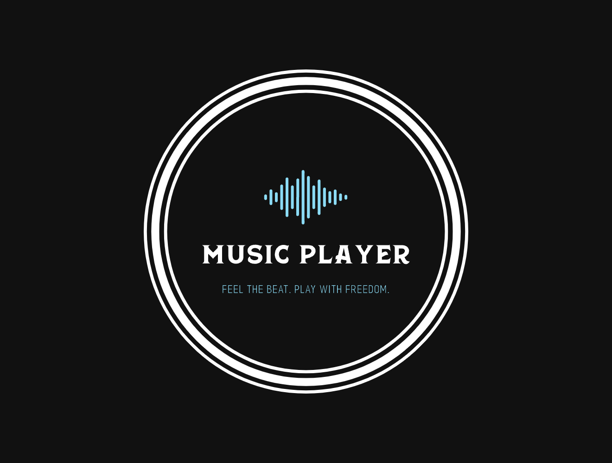

Expense Tracker
Express
MongoDB
Javascript
Http-Error
JWT
Crypto
FS
HTML
CSS
Features :-
-
Users can create their own categories, record their expenses
and incomes, and analyze their financial data.
-
The application uses JSON Web Token (JWT) authentication to
ensure secure user sessions.
-
Utilizes MongoDB, a NoSQL database, for efficient data storage
and management.

Music Player
Express
MongoDB
Javascript
JWT
Multer
Crypto
Http-Error
FS
HTML
CSS
Features :-
- Multer is used internally for users to upload songs.
- yt-dlp is implemented to download files from links.
-
Users can search for the songs using keywords including song
name, artist or genre.
-
Playlist is automatically created based on artist name, genre
name or recently added songs.
-
Mongodb is used for storing all the songs, artists, genres
related data's.
-
All the routes are secured using JWT token as the
authentication middleware.
-
Songs are served through the static server from express.